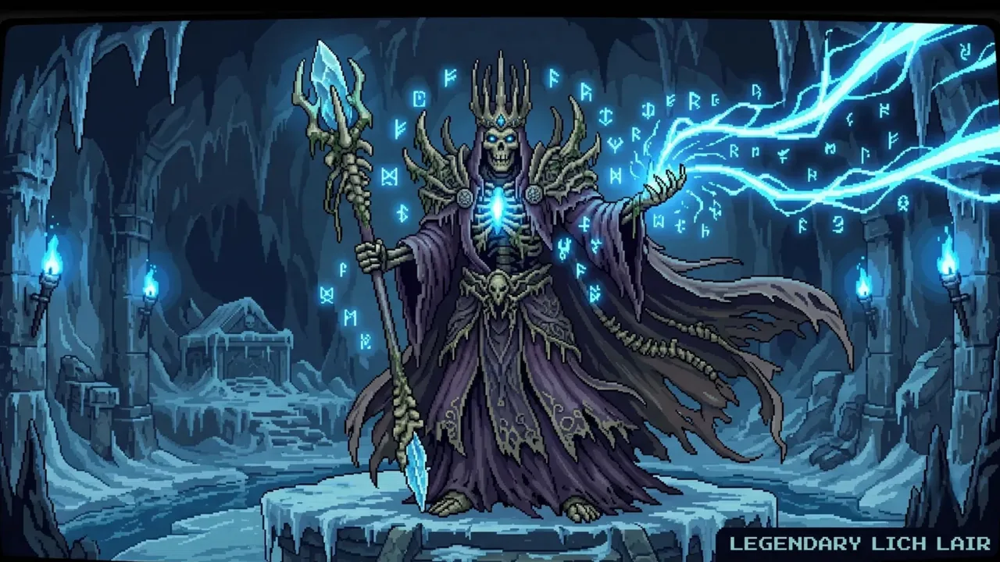

메인 학습 공간. 정답으로 몬스터를 공격하고 스테이지를 진행합니다.
VOCA HERO!
학생
퀵가이드
용사를 만들고 Google 계정을 연결한 뒤, 영단어 퀴즈로 성장하고 친구들과 협동하는 방법

퀴즈영단어 반복 학습
성장장비·펫·스킬
수집유물·카드·외형
협동길드·월드보스
용사를 만들고 Google 계정을 연결한 뒤, 영단어 퀴즈로 성장하고 친구들과 협동하는 방법
상단의 길드 가입을 열고 선생님이 준 영문·숫자 6자리 코드, QR 또는 참여 링크를 이용합니다. 길드에 들어가도 개인 학습·게임 기록은 내 계정에 유지됩니다.
교사가 배정한 단어팩과 문제 유형이 퀴즈 전투에 반영됩니다.
퀴즈 풀기 → 정답 보상 → 영웅 성장 → 다음 스테이지
정답은 골드·FP·전투 성장과 길드 기여에 연결됩니다. 틀린 단어는 기록되어 다시 학습할 수 있습니다.
철자 입력은 대소문자와 띄어쓰기에 관계없이 채점합니다.
단어를 반복해서 맞힐수록 학습 기록이 쌓입니다. 정답 10회 이상·누적 정답률 80% 이상이면 숙련 단어로 표시됩니다.
길드에서 많이 틀린 단어를 선생님이 시련으로 보낼 수 있습니다. 전체 문제를 최대 3회 도전하며 모두 맞히면 극복합니다.
메인 학습 공간. 정답으로 몬스터를 공격하고 스테이지를 진행합니다.
 대장간·잠재력
대장간·잠재력골드로 장비를 강화하고 20스테이지 이후 잠재력 옵션을 연구합니다.
 펫·유물 소환
펫·유물 소환펫의 고유 효과는 누적됩니다. 유물은 전투와 학습 보너스를 제공합니다.
 마법 스킬
마법 스킬퀴즈 FP로 캡슐을 열어 얻고 성장시켜 최대 4장을 장착해 시전합니다.
 길드·차원 영웅
길드·차원 영웅길드 코인으로 외형을 소환하고 도감·길드 효과·상점을 이용합니다.

월드보스·명예의 전당전 학년이 공유 체력을 함께 줄이고 학습·성장 기록으로 칭호와 순위에 도전합니다.
| 도달 단계 | 열리는 기능 |
|---|---|
| 20 | 무구 잠재력 연구소 |
| 30 | 고대 유물 소환 제단 |
| 45 / 55 / 65 | 지혜의 목걸이 / 투지의 팔찌 / 영웅의 반지 |
월드보스는 성장 수치뿐 아니라 정확한 영단어 퀴즈 풀이와 보스 패턴 대응이 중요합니다.